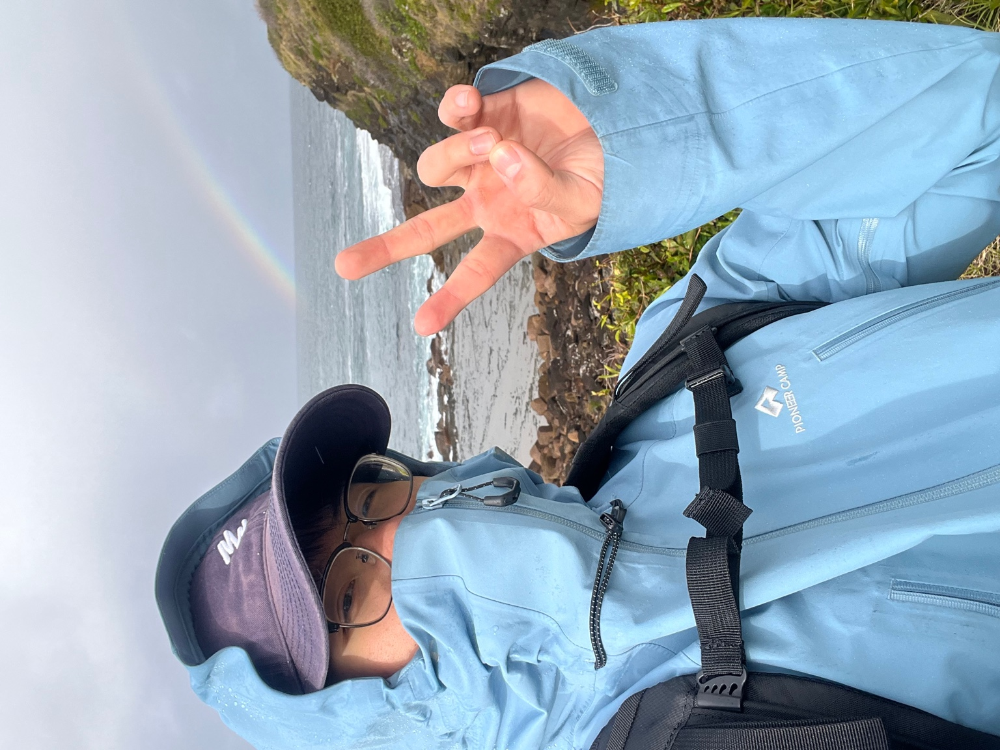
Hiking and trekking徒步
Long routes help me reset my focus and practice patience one step at a time.长线徒步让我重新聚焦，也训练一步一步解决问题的耐心。
Beyond work工作之外
This is also a life trajectory: hiking, skiing, diving, training, and time on the court keep me steady, curious, and ready to act outside study and work.这也是一条生活轨迹：徒步、滑雪、潜水、训练和球场里的片段，记录我如何在学习和工作之外保持稳定、好奇和行动力。
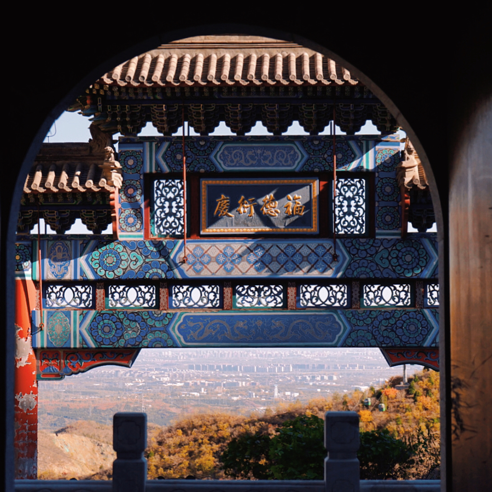
Archway山门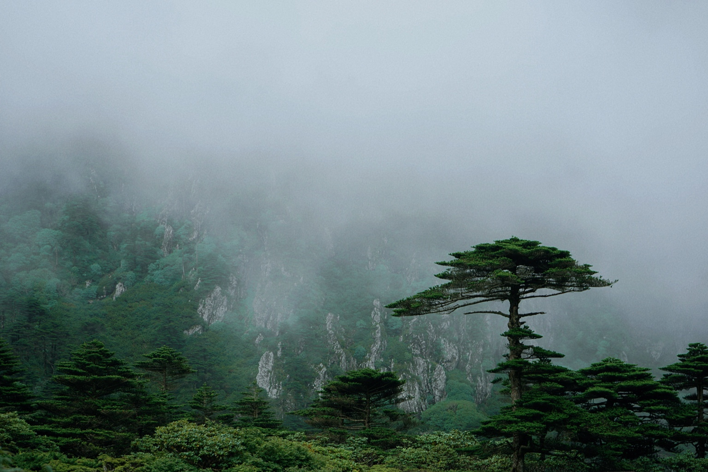
Misty forest雾林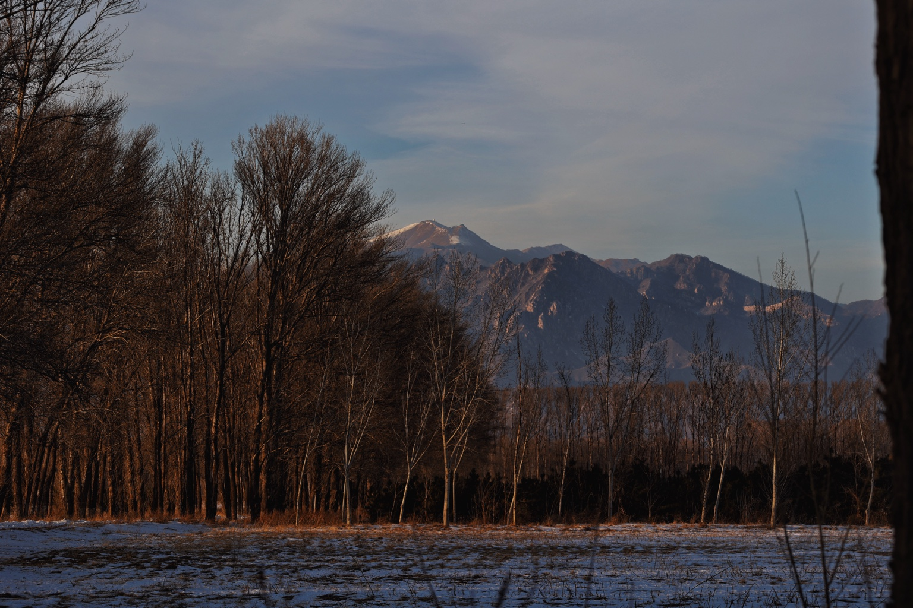
Mountain and trees山林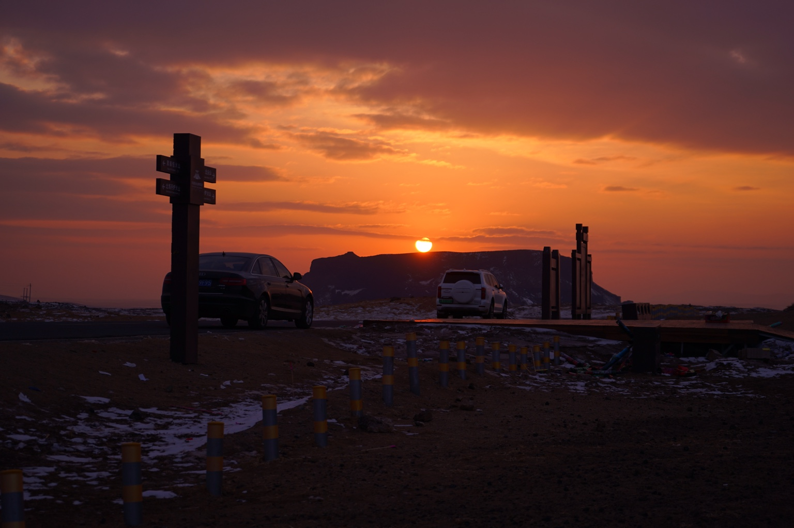
Sunset drive日落车流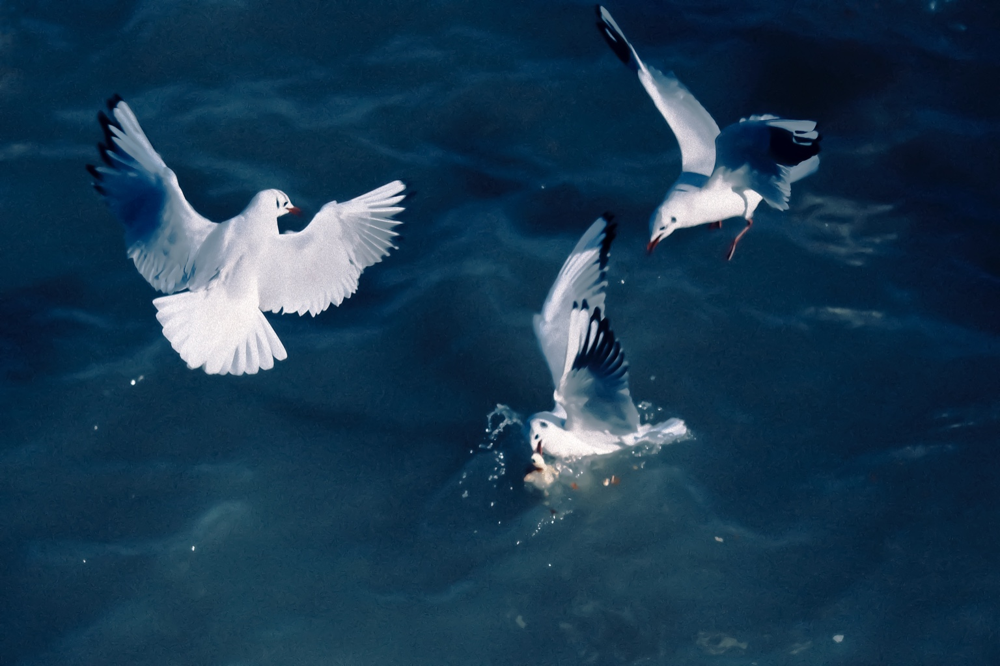
Seagulls海鸥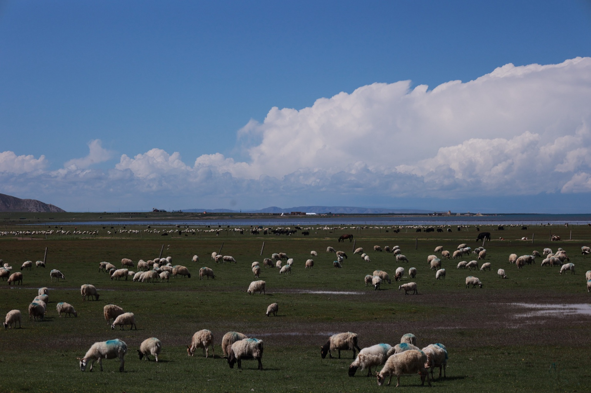
Pasture牧场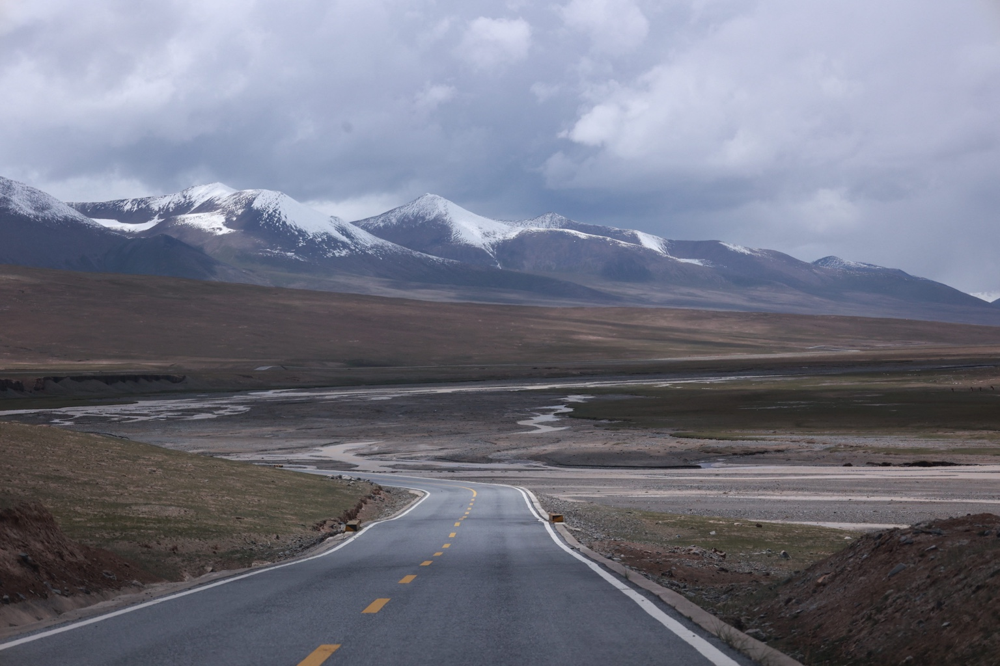
Mountain road山路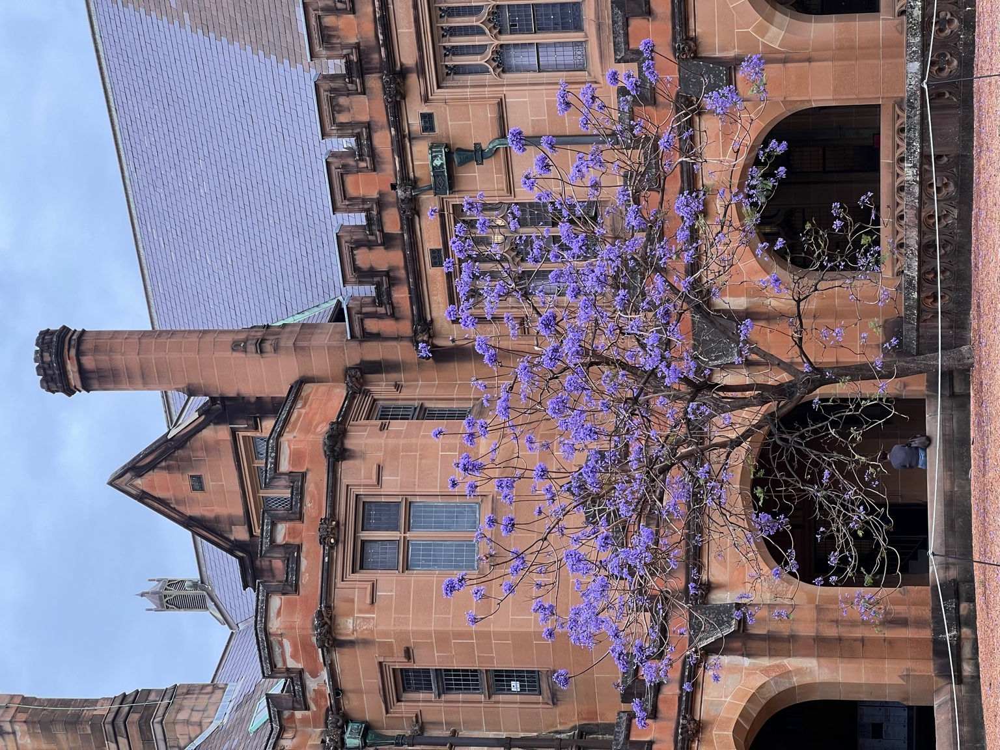
Campus校园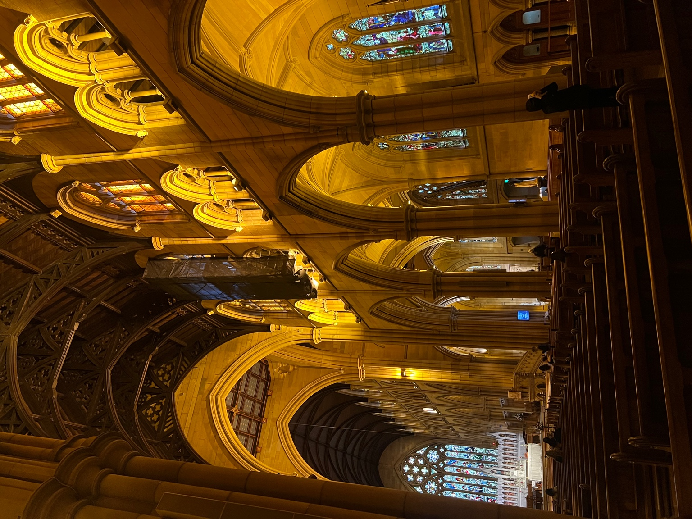
Cathedral教堂Activities爱好

Long routes help me reset my focus and practice patience one step at a time.长线徒步让我重新聚焦，也训练一步一步解决问题的耐心。
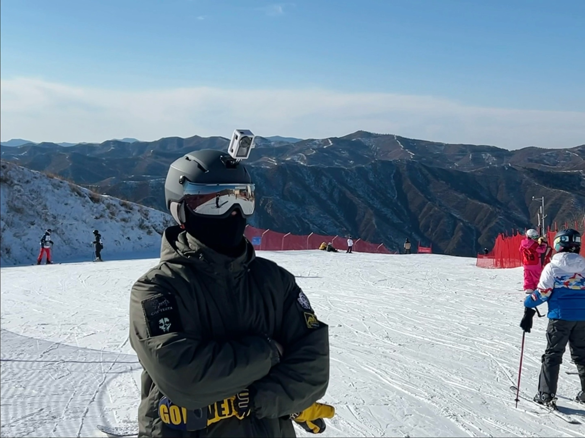
Skiing is a clean reminder that balance, speed, and judgment have to work together.滑雪提醒我，平衡、速度和判断必须一起发挥作用。
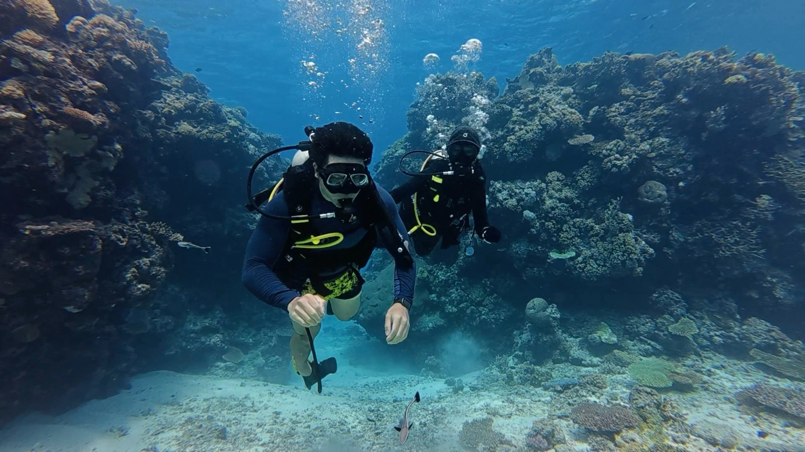
Diving pushes me to stay calm, observe carefully, and respect unfamiliar environments.潜水让我保持冷静、细致观察，也尊重陌生环境。
Consistent training gives me a simple structure for discipline and recovery.稳定训练给我纪律感，也帮助我恢复状态。
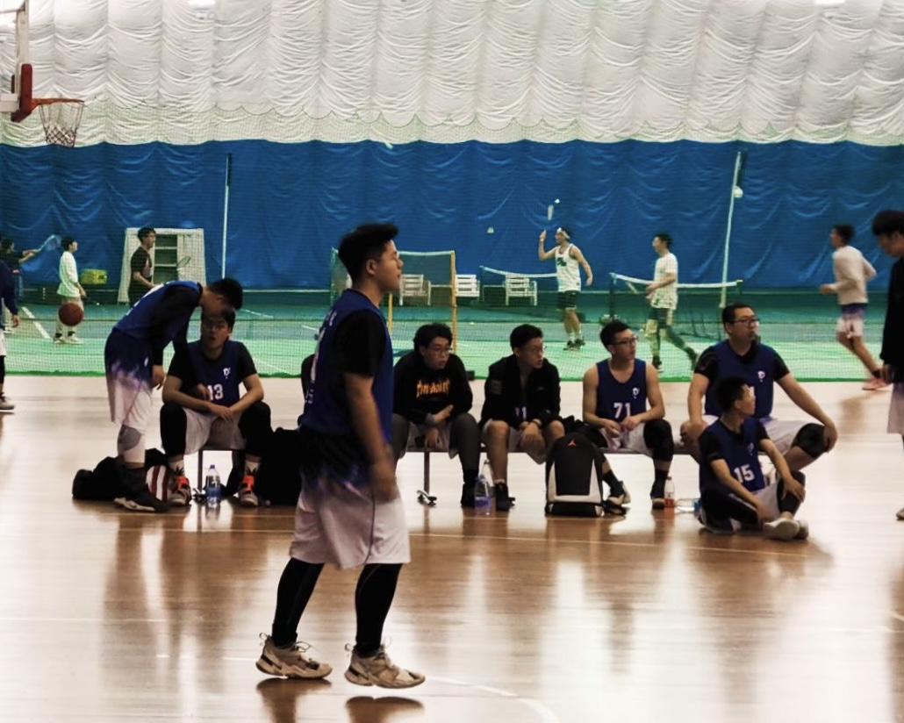
Basketball keeps teamwork physical: timing, trust, and fast decisions matter.篮球让协作变得具体：节奏、信任和快速决策都很重要。